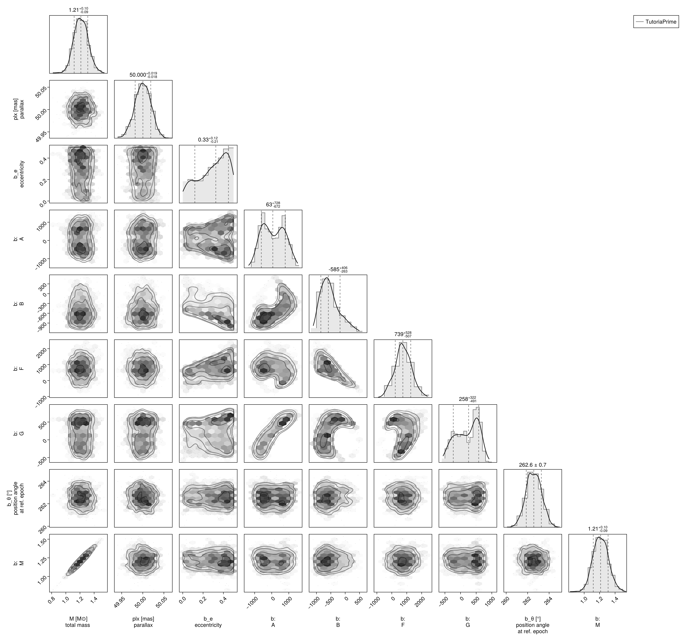
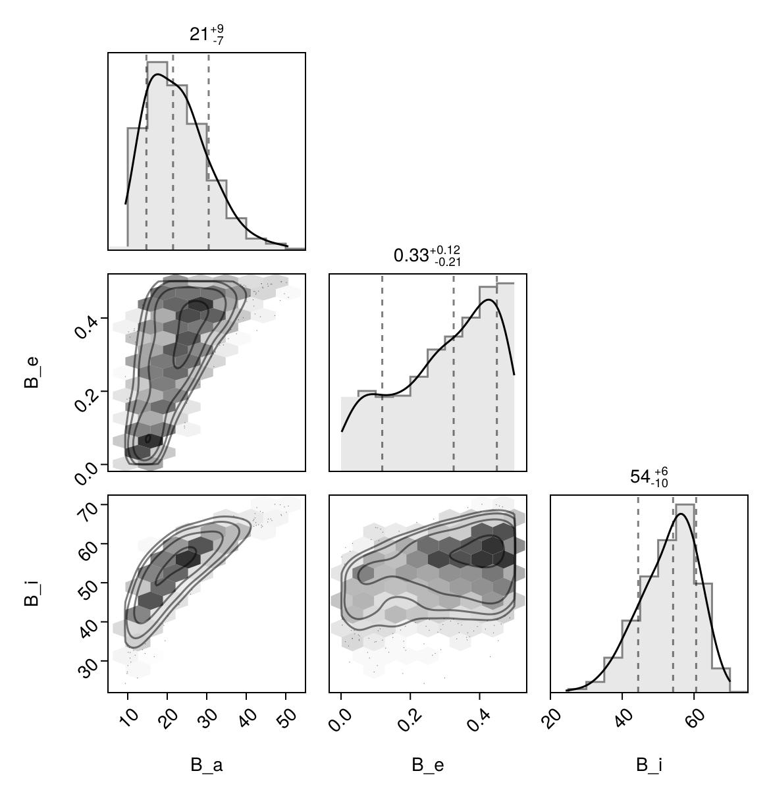

Fit with a Thiele-Innes Basis
This example shows how to fit relative astrometry using a Thiele-Innes orbital basis instead of the traditional Campbell basis used in other tutorials. The Thiele-Innes basis is more suitable then Campbell for fitting low-eccentricity orbits, because it does not have the issues where ω, Ω, and tp become degenerate as eccentricity and/or inclination fall to zero.
At the end, we will convert our results back into the Campbell basis to compare.
using Octofitter
using CairoMakie
using PairPlots
using Distributions
astrom_dat = Table(;
epoch = [50000, 50120, 50240, 50360, 50480, 50600, 50720, 50840],
ra = [-505.7637580573554, -502.570356287689, -498.2089148883798, -492.67768482682357, -485.9770335870402, -478.1095526888573, -469.0801731788123, -458.89628893460525],
dec = [-66.92982418533026, -37.47217527025044, -7.927548139010479, 21.63557115669823, 51.147204404903704, 80.53589069730698, 109.72870493064629, 138.65128697876773],
σ_ra = [10, 10, 10, 10, 10, 10, 10, 10],
σ_dec = [10, 10, 10, 10, 10, 10, 10, 10],
cor = [0, 0, 0, 0, 0, 0, 0, 0]
)
astrom_like = PlanetRelAstromLikelihood(
astrom_dat,
name = "GPI",
variables = @variables begin
# Fixed values for this example - could be free variables:
jitter = 0 # mas [could use: jitter ~ Uniform(0, 10)]
northangle = 0 # radians [could use: northangle ~ Normal(0, deg2rad(1))]
platescale = 1 # relative [could use: platescale ~ truncated(Normal(1, 0.01), lower=0)]
end
)
planet_b = Planet(
name="b",
basis=ThieleInnesOrbit,
likelihoods=[astrom_like],
variables=@variables begin
e ~ Uniform(0.0, 0.5)
A ~ Normal(0, 1000) # milliarcseconds
B ~ Normal(0, 1000) # milliarcseconds
F ~ Normal(0, 1000) # milliarcseconds
G ~ Normal(0, 1000) # milliarcseconds
M = system.M
θ ~ UniformCircular()
tp = θ_at_epoch_to_tperi(θ, 50000.0; system.plx, M, e, A, B, F, G) # reference epoch for θ. Choose an MJD date near your data.
end
)
sys = System(
name="TutoriaPrime",
companions=[planet_b],
likelihoods=[],
variables=@variables begin
M ~ truncated(Normal(1.2, 0.1), lower=0.1)
plx ~ truncated(Normal(50.0, 0.02), lower=0.1)
end
)
model = Octofitter.LogDensityModel(sys)LogDensityModel for System TutoriaPrime of dimension 9 and 9 epochs with fields .ℓπcallback and .∇ℓπcallback
Initialize the starting points, and confirm the data are entered correcly:
init_chain = initialize!(model)
octoplot(model, init_chain)We now sample from the model as usual:
results = octofit(model)Chains MCMC chain (1000×28×1 Array{Float64, 3}):
Iterations = 1:1:1000
Number of chains = 1
Samples per chain = 1000
Wall duration = 5.39 seconds
Compute duration = 5.39 seconds
parameters = M, plx, b_e, b_A, b_B, b_F, b_G, b_θx, b_θy, b_θ, b_M, b_tp, b_GPI_jitter, b_GPI_northangle, b_GPI_platescale
internals = n_steps, is_accept, acceptance_rate, hamiltonian_energy, hamiltonian_energy_error, max_hamiltonian_energy_error, tree_depth, numerical_error, step_size, nom_step_size, is_adapt, loglike, logpost, tree_depth, numerical_error
Summary Statistics
parameters mean std mcse ess_bulk ess_tail ⋯
Symbol Float64 Float64 Float64 Float64 Float64 ⋯
M 1.2140 0.1010 0.0039 692.6569 417.2303 ⋯
plx 50.0001 0.0187 0.0006 872.5826 539.8893 ⋯
b_e 0.3001 0.1421 0.0079 332.0176 437.6022 ⋯
b_A 93.0617 641.0548 65.9660 104.1310 578.0779 ⋯
b_B -524.8158 327.6391 30.2046 141.9411 123.3160 ⋯
b_F 763.4552 545.5885 47.2923 130.2376 119.5119 ⋯
b_G 205.9457 356.7883 35.5829 118.2519 273.2726 ⋯
b_θx -0.1292 0.0175 0.0006 952.2530 672.2245 ⋯
b_θy -0.9919 0.0999 0.0034 919.4590 714.2036 ⋯
b_θ -1.7003 0.0123 0.0004 850.6611 737.2112 ⋯
b_M 1.2140 0.1010 0.0039 692.6569 417.2303 ⋯
b_tp 30547.9753 22694.1287 1446.3065 266.0000 543.2634 ⋯
b_GPI_jitter 0.0000 0.0000 NaN NaN NaN ⋯
b_GPI_northangle 0.0000 0.0000 NaN NaN NaN ⋯
b_GPI_platescale 1.0000 0.0000 NaN NaN NaN ⋯
2 columns omitted
Quantiles
parameters 2.5% 25.0% 50.0% 75.0% ⋯
Symbol Float64 Float64 Float64 Float64 F ⋯
M 1.0232 1.1454 1.2127 1.2814 ⋯
plx 49.9630 49.9869 50.0003 50.0131 5 ⋯
b_e 0.0215 0.1948 0.3250 0.4227 ⋯
b_A -962.7058 -479.9802 62.7167 643.7786 121 ⋯
b_B -992.1653 -767.6000 -584.6327 -347.8091 24 ⋯
b_F -303.6026 424.3551 739.2828 1134.9590 189 ⋯
b_G -456.9558 -104.7983 258.2604 520.3877 72 ⋯
b_θx -0.1647 -0.1410 -0.1285 -0.1169 - ⋯
b_θy -1.1879 -1.0570 -0.9861 -0.9240 - ⋯
b_θ -1.7242 -1.7088 -1.7004 -1.6917 - ⋯
b_M 1.0232 1.1454 1.2127 1.2814 ⋯
b_tp -31763.8292 18035.9713 37954.9888 48687.0681 4983 ⋯
b_GPI_jitter 0.0000 0.0000 0.0000 0.0000 ⋯
b_GPI_northangle 0.0000 0.0000 0.0000 0.0000 ⋯
b_GPI_platescale 1.0000 1.0000 1.0000 1.0000 ⋯
1 column omitted
Notice that the fit was very very fast! The Thiele-Innes orbital paramterization is easier to explore than the default Campbell in many cases.
We now display the results:
octoplot(model,results)octocorner(model, results, small=false)
Conversion back to Campbell Elements
To convert our chain into the more familiar Campbell parameterization, we have to do a few steps. We start by turning the chain table into a an array of orbit objects, and then convert their type:
orbits_ti = Octofitter.construct_elements(model, results, :b, :) # colon means all rows1000-element Vector{ThieleInnesOrbit{Float64}}:
ThieleInnesOrbit{Float64}(0.4491774252392852, 33656.517390298286, 1.1195570990153587, 49.97199358623161, 620.2091256866482, -166.3928616904345, -20.446033279738135, 618.7035351870009, -6.390306502632633, -7.245869087616706, 18767.714806983324, 0.1222809200294016, 1.6220151809361454)
ThieleInnesOrbit{Float64}(0.4932866838810697, 13266.425261527409, 1.328651910109627, 50.02583923853302, 1261.582339261535, -62.77098684069207, 152.57108846652918, 688.940701335329, -2.821927773154228, 21.131848749170015, 40581.04187269986, 0.05655186085774741, 1.7166843085493773)
ThieleInnesOrbit{Float64}(0.4980889128613669, 10641.26286040451, 1.152108031883975, 49.98791478621815, 1226.3882544696767, -233.97078347351152, 263.8733048036809, 694.056067278454, 3.1739060687465455, -20.32829464313289, 42989.14953411226, 0.05338401569508359, 1.7276485511970825)
ThieleInnesOrbit{Float64}(0.49985509238967657, 48873.30301166308, 1.1488601433494838, 49.990942062594186, -684.4189201623274, -1050.33836172945, 1648.5024868453818, -11.748935567106827, -27.041782117691078, -16.5126744786796, 76322.569539772, 0.030068870155785896, 1.7317162224196894)
ThieleInnesOrbit{Float64}(0.4494517103088292, 47699.203253489715, 1.2598861119590965, 50.01109231679196, -976.9636250099538, -852.2548357609729, 692.6581328494699, -343.3003397634183, -6.995348916707502, -21.954704741321287, 45275.57652748031, 0.05068811066501647, 1.6225727073812224)
ThieleInnesOrbit{Float64}(0.40553636038483387, 49258.494905013664, 1.1950575983374778, 49.981519725444905, -409.0561495692448, -931.425457472991, 1175.378404631119, 159.2814676842162, -18.35972312313931, -13.71741632727551, 47949.09402867454, 0.04786187267844783, 1.5376531931475308)
ThieleInnesOrbit{Float64}(0.32585728601971375, 48101.29698354328, 1.2240737246921, 50.01869924582901, -681.2302301265249, -816.9281617633791, 1450.2516203547857, 66.53009812870613, -25.595412313271723, -16.276766587838246, 63374.24865929419, 0.03621239670682516, 1.4024018216900225)
ThieleInnesOrbit{Float64}(0.39238655646749016, 49060.18676143873, 1.2318050161178256, 49.98340758999033, -457.17676218249596, -880.3101566339611, 1580.3122073769096, 125.10605199645482, -27.540396044947837, -12.10101733147555, 65088.83968542538, 0.03525847817442693, 1.5137920624579626)
ThieleInnesOrbit{Float64}(0.4389443592889959, 48399.64298712343, 1.1674352861460142, 50.0425442839126, -761.7628262314295, -948.5511831166283, 1614.008925686945, 16.84170712677557, -27.756194777108067, -17.918168303235404, 75766.01144876805, 0.030289748523969044, 1.6014708352400564)
ThieleInnesOrbit{Float64}(0.49535962883190543, 48874.83864268243, 1.2309918149538517, 49.9609827201255, -679.5988572440428, -1089.5082745704856, 1413.4644023070662, 45.69073144110703, -21.93559001503845, -18.45307910801692, 64662.159111510344, 0.035491135232427286, 1.7214001252725661)
⋮
ThieleInnesOrbit{Float64}(0.20771529599538008, 48540.38065630513, 1.135087576302633, 49.990194128430154, -486.2108961031945, -661.6427190939611, 822.8846386986432, -84.91689396780426, -11.818195618345875, -11.644612344259068, 31205.41371818873, 0.07354279786746405, 1.2346437084945352)
ThieleInnesOrbit{Float64}(0.2876475898436402, 48767.38825868419, 1.1182632885116952, 49.99112230375237, -483.439737762518, -667.4351049866838, 551.7171371832018, -246.4395364061557, -3.4848858659774224, -11.739369374030373, 23890.042480238328, 0.09606234209695091, 1.344469828654259)
ThieleInnesOrbit{Float64}(0.48017058183464706, 49097.16310901, 1.2013154979629428, 50.01068077704275, -532.4932157060222, -789.3425041598647, 511.49459517902557, -419.56876724815424, 1.7042519434853949, -13.798649860211516, 27851.000453722485, 0.08240039481743679, 1.6874288015026404)
ThieleInnesOrbit{Float64}(0.43503800397698017, 47824.644368387686, 1.2279997845659112, 50.00640424636453, -872.8471934112624, -711.792730401974, 468.16075277346107, -450.31048805211867, -1.904725607215118, -18.497677868973494, 35420.34462935868, 0.06479139199411273, 1.5937569219847905)
ThieleInnesOrbit{Float64}(0.2543017956637242, 48802.49694006418, 1.093633349418435, 50.021396519410125, -463.867313551656, -647.9523984522236, 616.7606906727873, -212.90466187545877, -5.5376475786657755, -10.691639567428794, 24192.0129076652, 0.09486326922056981, 1.2969387710121871)
ThieleInnesOrbit{Float64}(0.07282001221411369, 48806.344494597724, 1.2370978669545891, 50.009316899930816, -391.7774994383033, -474.1318876933786, 445.2832511750504, -251.4982472631659, -2.9639236193729808, -7.447972062686473, 14776.699118692433, 0.15530758358233518, 1.0756758254043794)
ThieleInnesOrbit{Float64}(0.07215328832806564, 48101.12562740634, 1.3233969110469264, 49.99860156706884, -528.7466563376502, -420.4635408925532, 368.5185981494866, -338.0744180051309, -2.252797629153509, -9.358667162748167, 16096.47182739958, 0.14257369304625406, 1.0749550999819275)
ThieleInnesOrbit{Float64}(0.05494986901427612, 48094.45483853181, 1.204677508007318, 50.00096915877617, -509.3151893608469, -443.14986179646667, 424.05883977412213, -296.96993067783285, -3.5968813781281455, -9.383034330285346, 17381.861569429308, 0.13203035959529233, 1.0565461892680637)
ThieleInnesOrbit{Float64}(0.0525980621650306, 48922.49225242361, 1.0564056535487707, 49.977570879873014, -318.2671764309866, -516.8850684001378, 606.6727777708734, -138.41806559170283, -7.249557603192065, -6.7119634166296755, 18904.977994007128, 0.12139307616093692, 1.0540571261184883)Here is one of those entries:
display(orbits_ti[1])We can now make a table of results (and visualize them in a corner plot) by querying properties of these objects:
table = (;
B_a = semimajoraxis.(orbits_ti),
B_e = eccentricity.(orbits_ti),
B_i = rad2deg.(inclination.(orbits_ti)),
)
pairplot(table)
We can also convert the orbit objects into Campbell parameters:
orbits_campbell = Visual{KepOrbit}.(orbits_ti)
orbits_campbell[1]KepOrbit{Float64}
─────────────────────────
a [au ] = 14.4
e = 0.44917743
i [° ] = 42.3
ω [° ] = 221.0
Ω [° ] = 132.0
tp [day] = 33700.0
M [M⊙ ] = 1.12
period [yrs ] : 51.4
mean motion [°/yr] : 7.01
──────────────────────────
plx [mas] = 50.0
distance [pc ] : 20.0
──────────────────────────